New ways of looking at the figures
So far, we have discussed the structure and content of financial statements. Now it is time to really analyse them. There are four key ways to look at the numbers:
As presented – that is, you examine the underlying raw data.
Cross-sectional – look at relationships between various numbers (e.g. current assets relative to total assets) – otherwise known as vertical analysis.
Trends over time – otherwise known as horizontal analysis.
Comparisons – with the industry average or key competitors.
Also, there are four ways of reviewing these. You can analyse:
Absolute values – i.e. the raw data and increases or decreases in dollars.
Percentages.
Index numbers.
Ratios – such as current assets as a percentage of total assets.
When you use the latter three analyses, you are ignoring absolute value to focus on relative values – beanies, ever ready with their own jargon, call this common size analysis.
Analysis in action
The easiest way to explain the analysis is to walk through an example. The following notes use the figures for sales by region from the previous chapter.
Raw data
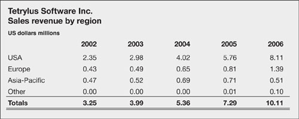First, take a look at the raw data and see what you can deduce. The earliest and latest years are illustrated in Fig. 18.1. A chart often helps with interpretation. In these figures, it is immediately apparent that the US was by far the most important region in the latest year, while Europe lagged somewhat behind. In the earliest year, Europe and Asia-Pacific were roughly level pegging.
Fig 18.1. Sales by region
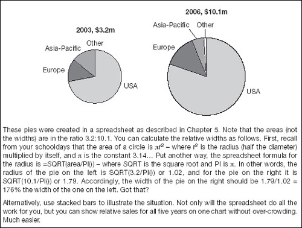You can also say something about the dollar amounts of revenue generated from each region. If you knew the average sale price by region, you could divide them into these revenue figures to find the underlying sales volumes, which would be very interesting (see Chapter 9).
Percentage of total
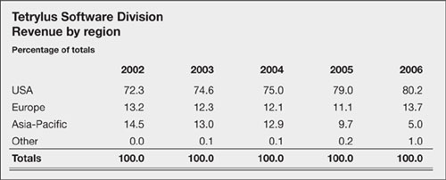Once the figures are restated on a percentage basis, it becomes much easier to quantify the importance of the US. In the most recent year, the US accounted for 80% of sales. This percentage has been climbing gently but steadily over the entire period under review. It is also clear that the proportion of sales in Europe tailed off slightly over the period, but recovered in the latest year. Sales in Asia-Pacific are in decline. One of the questions that you would need to look elsewhere to answer is why have sales in Asia-Pacific dropped off? Was it due to increasing competition or a deliberate attempt to target higher-priced markets elsewhere?
Note that sales in the rest of the world were less than $10,000 a year in the early periods, which rounds to zero (raw data). This was still large enough to show in many of the other tables here, which are calculated from the accurate raw data.
Dollar changes
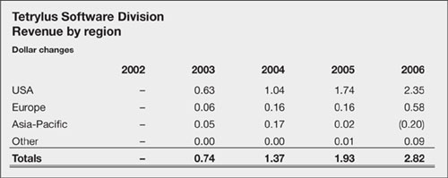When you can see the changes in dollars (or in whatever currency the accounts are reported), it is immediately obvious that total sales revenue has been growing steadily. The same applies to the growth in US markets. However, sales in Europe jumped up in the most recent period while those in Asia-Pacific actually fell.
Percentage change
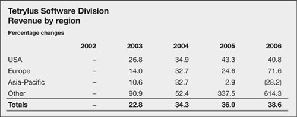The changes in percentage terms quantify the trends. It is immediately obvious that sales in the US did not grow as quickly in the latest period as they did in the year before. Why? The latest increase in sales in Europe is impressive, but the slowdown and then fall in Asia-Pacific could be significant. Sales in the rest of the world are so small that one extra sale can make a big difference in percentage terms.
Index numbers
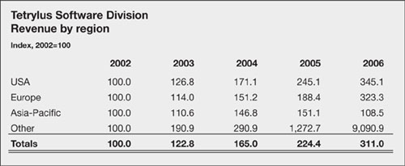Converting the raw data to index numbers highlights relative growth. It is clear that the trend in sales in Europe has not been far behind that in the US, except in 2005. Perhaps European sales did not so much jump in 2006 as falter in 2005 and then recover. Charts would help you spot the patterns in any of these tables. Indeed, Fig. 18.2 reveals these relative growth trends very clearly.
Fig 18.2. Growth rates: Europe lags, Asia-Pacific slumps
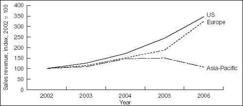
‘The bank’s accounts show its true position. The actual position is a little better still.’
—Chairman, London and County Bank
Vertical and horizontal
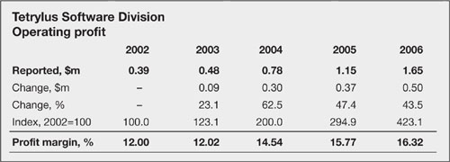
This table shows a similar analysis of operating profit for the whole business. If you compare it with the sales figures, especially the index numbers, you can see that profits have been growing faster than sales. If you think about it, the implication is fairly obvious – the profit margin has been expanding (final row of the table; profit divided by sales revenue). The expanding margin might be the result of lower input prices, increased efficiency or a higher selling price. By bringing in a second series of numbers, we have extended the analysis considerably. Now, I do not know about you, but my first thoughts were: this looks like a healthy profit margin, but how does it compare with other companies?
Comparing competitors
Before comparing the sample company with another, it is as well to be familiar with a number of challenges. These include the problems of dealing with differing accounting policies, GAAPs, periods and currencies, and different operating environments. First, a overview of why these factors are important, then a real-world example.
Domestic environment. It always tricky to compare two companies, because the structure of their profit and loss accounts and balance sheets will differ according to their level of maturity, size, and industry. For example, younger companies may make lower profits while they are building market share, larger businesses have economies of scale, and supermarkets have lower gross margins than software developers.
Accounting periods. Fiscal years can produce an anomaly. If one business makes up its accounts for the 12 months to 30 June and another works on a calendar year basis, you could end up trying to compare results for two periods when operating conditions were very different.
Accounting policies. Judicious (and I use that word loosely) selection of accounting policies within one country’s GAAP can change a company’s bottom line significantly (see depreciation, Chapter 11, and inventory valuation, Chapter 13, for just two examples).
Accounting GAAP. However, if the same accounts are redrawn under another country’s GAAP, the divergence can be even greater (see Chapter 2).
International environment. On top of this, cultural, institutional and other environmental factors can further magnify apparent variances. To take just one example, companies in the US, Europe and Japan are financed differently. Their varying use of short- and long-term loans and equity directly affects many indicators, not least those relating to debt and liquidity (see Chapter 19). Moreover, stock market investors clamouring for growth in earning and dividends heavily influence corporate policy in the US, while Japanese companies with a greater proportion of institutional and corporate shareholders can place stronger emphasis on building market share. And, for example, French and German companies have traditionally taken a more conservative approach to profits than their UK and US counterparts.
Accounting currencies. Finally, for the moment, currencies throw a potentially huge spanner in the works. Consider a foreign corporation with profits that are unchanged from year to year. Suppose that its national currency appreciates by 10% per annum against the dollar. Over, say, five years the company’s net profit (converted into dollars) will appear to have risen by more than 60%, even though the company’s performance was unchanged. There are other currency translation issues, which we will discuss in Chapter 21. For the moment, simply knowing that they exist is good enough.
|
One company, two currencies
Here are sales and profits figures for Indian software giant Infosys, prepared in accordance with Indian GAAP. The raw data are in rupees which of course cannot be compared directly with Tetrylus’s results in dollars, but you can make good use of the percentage changes, index numbers and margins. The growth rates and profit margins generated by Infosys seem to put Tetrylus to shame.
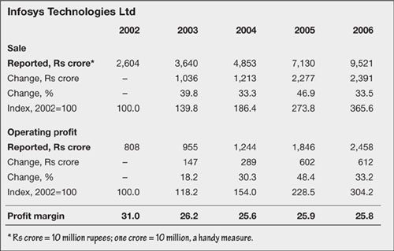‘In my opinion, the growing capacity for financial engineering and innovation in today’s financial system tips the balance decisively in favour of principles-based standards. Detailed rules have become simply too easy to circumvent through what has euphemistically been called “aggressive accounting”.’
—Andrew Crockett
(General Manager of the Bank for International Settlements and Chairman of the Financial Stability Forum, 2002)
The following table shows the same data restated in US dollars and US GAAP. The absolute figures show that Infosys (total sales $2.15 billion in 2006) is a true giant compared with Tetrylus (2006 sales of $10 million). It is also interesting to compare the Infosys indexes and margins on the two different accounting bases. In the past, the divergences were much greater. For example, the 1998 profit margin was 33% based on the Indian GAAP accounts and 18% based on the US GAAP figures.
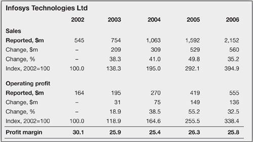The lesson
|
| The clear message from the foregoing is that when analysing the performance of a company, you should prefer figures prepared in the operating currency (the measurement currency; rupees for Infosys). When comparing results for two companies with different measurement currencies, you have a dilemma. Where possible keep them in the original currencies but convert them onto the same GAAP and make further adjustments to bring accounting policies onto a similar basis. As already mentioned, analysts frequently use figures such as earnings before interest, tax, depreciation and amortization (EBITDA) to help minimize these problems – more on this below. |
Another example
If you thought Infosys was big and successful, take a look at the sales, profits and margins for Seattle software colossus Microsoft, below.
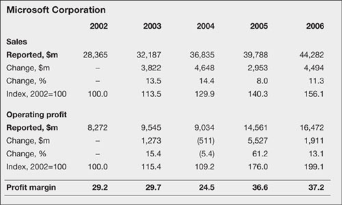A good question is how comparable is the businesses of Tetrylus with that of either Infosys or Microsoft? This query is especially valid, given the fact that these two giants have different markets and products. Obviously, by comparing various businesses, you can quickly assess relative performance, but you need to select the best benchmarks. Maybe you should compare each segment with the market leaders for that area or activity, rather than finding just one role model. It is also instructive to compare the company under the magnifying glass with the industry as a whole, and even an average for corporations in general. We will come on to this in a moment.
Comparisons extended
Just for the sake of extending the previous example, the following table compares profit and loss accounts for the three software companies. The figures in money terms are difficult to compare, given the different scale and currencies. But once the figures are converted into index form – common sized as beanies like to say – relative performance becomes very obvious.
For these examples, it is very likely that accounting differences result in differing treatment of expenses. Accordingly, the split between cost of sales and operational spending may be misleading. The allocation of costs between these two categories does not affect operating profits, but there are still divergences in the common size figures. There may be accounting differences, especially in the expensing and amortization of software development costs, which we should explore. Also interesting are the variations in the proportion of profit given up in income taxes.
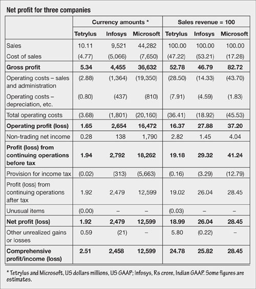As already mentioned, differences in financing, investment, tax and depreciation policies can obscure underlying performance. By reversing out these factors (i.e. calculating earnings before interest tax, depreciation and amortization – EBITDA), you arrive at the most directly comparable figures.
The market
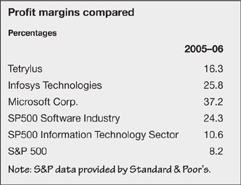
As mentioned above, it is also instructive to compare a company against the average performance of a group of other businesses. Stock market indices helpfully provide such data. The table above shows the profit margin from the previous calculations, together with figures for an appropriate industry group, a sector and the market as a whole. The industry comprises similar companies in the software and programming business. The sector is a broader collection, including computer services, hardware and networks, and, as it happens, office equipment, scientific and technical instruments and semiconductors. I think I have already said that you need to make wise comparisons. The figure for the S&P 500 is an average for 500 companies in the Standard & Poor’s stock market index.
Stock market indices
|
| The shares of listed companies are traded on secondary markets, or stock markets (more on this in the next chapter). Every formal market has at least one published index of share prices. The best indices for analysis cover many companies and are weighted by market capitalization (see next chapter). These provide good industry and sectoral breakdowns. They include those published by Standard & Poor’s in the US and the Financial Times in the UK. Links to these and other indices are provided on this book’s website. |
Other analysis
I hope that these few notes have shown how easy it is to take a few figures and bring them to life. Figures 14.1 and 15.1 show further examples of the ratios and trends that we have discussed here. I am sure that you recall that Chapter 9 covered trend analysis in detail. It takes only moments to set up a spreadsheet to perform the calculations. Need I mention that there is an example on this book’s website. One other important point that I want to discuss is inflation – then we will return to our discussion of ratios.
Inflation
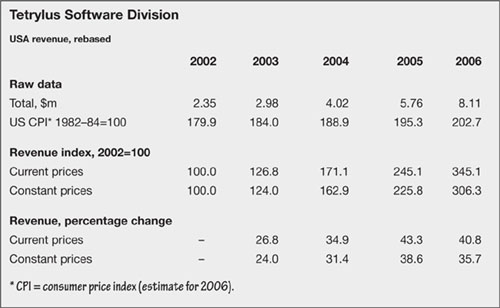Inflation (introduced in Chapter 6), especially when rapid, can significantly distort the figures. For example, if inflation is 10% a year, and sales revenue increases by 6%, sales have actually slipped by 4% in real terms. Accordingly, in times of high inflation, you might want to adjust data to remove the effects of general price changes and get at the underlying trends.
The optimum approach is to find a published indicator of inflation which is relevant to the figures under review. For example, the consumer or retail price index (CPI or RPI) might be relevant if you are dealing with a consumer goods company. A better alternative would be the consumers’ expenditure deflator, which is a better weighted average than CPIs and RPIs. You will also find GDP and industrial production deflators, which include price indices relevant to specific consumer, industry, government and overseas trade sectors. Check also for indices of raw material and wholesale prices. There is more information on this book’s website.
The table opposite uses the US consumer price index to deflate the sales revenue figures for the USA. The current price index is exactly the same sales index as previously calculated. The constant price index is revenue divided by the consumer price index and re-based to 2002=100. Obviously, given that inflation was not negative, the rate of growth in sales is slower in real terms. Such adjustment provides an alternative view of the numbers and can be quite useful.
Inflation accounting
In times of high inflation, conventional historical cost financial statements become increasingly difficult to interpret. For example, assets are shown in accounts at their acquisition cost less depreciation – and the net book value more rapidly falls out of line with rising market prices. Depreciation charges are not adequate to provide for asset replacement, and, indeed, future capital requirements become difficult to predict.
However, no one has managed to find a generally acceptable alternative to historic cost accounting. With the exception of some South American countries, which have experienced severe hyperinflation and have more-willingly embraced inflation accounting (current cost accounting), beanies cling to tradition. The US and UK flirted with inflation accounting in periods of rapid price rises during the 1970s, but immediately lost interest in the idea when price stability returned.
International accounting standards allow the revaluation of historical data during periods of hyperinflation – defined broadly as a doubling in the general price level in a three-year period – and require gains or losses resulting from the restatement to be disclosed separately in the profit and loss account. When hyperinflation has passed, the most recent restatement of values becomes the basis for the return to historical cost accounting.